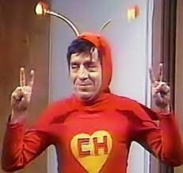

Chapolin
El Chapulín Colorado (Chapolin no Brasil) é um seriado de televisão mexicano produzido pela Televisa e exibido entre 1973 e 1979. Criada, escrita, dirigida e estrelada pelo comediante Roberto Gómez Bolaños, a série parodiava os super-heróis estadunidenses, e fazia constantemente críticas sociais em relação à América Latina.
Fonte: Wikipedia
Episódios
